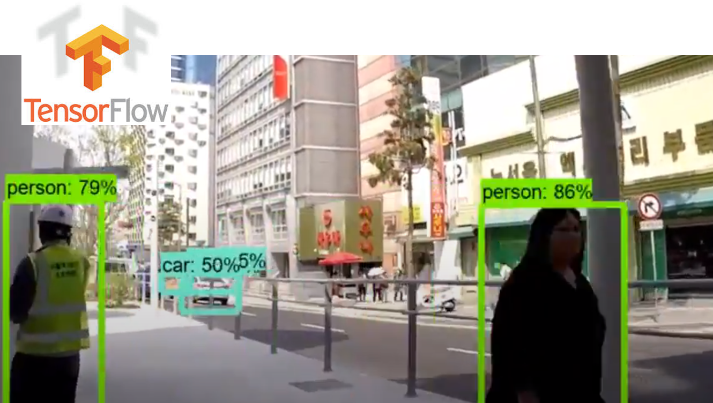

Home
ConnPath

Tensorflow Object Detection API는, Tensorflow 를 이용하여 이미지를 인식할 수 있도록 개발된 모델로, 라이브러리 형태로 제공되며, 각기 다른 정확도와 속도를 가지고 있는 5개의 모델을 제공한다. 머신러닝이나 텐서플로우에 대한 개념이 거의 없더라도 라이브러리 형태로 손쉽게 사용할 수 있으며, 직접 사용자 데이타를 업로드해서 학습을 하여, 내 시나리오에 맞는 Object Detection System을 손쉽게 만들 수 있다. Object Detection API를 설치하기 위해서는 텐서플로우 1.x 와 파이썬 2.7x 버전이 사전 설치되어 있어야 한다. 참고로 원본 설치 문서 https://github.com/tensorflow/models/blob/master/object_detection/g3doc/installation.md 참고하기 바란다.